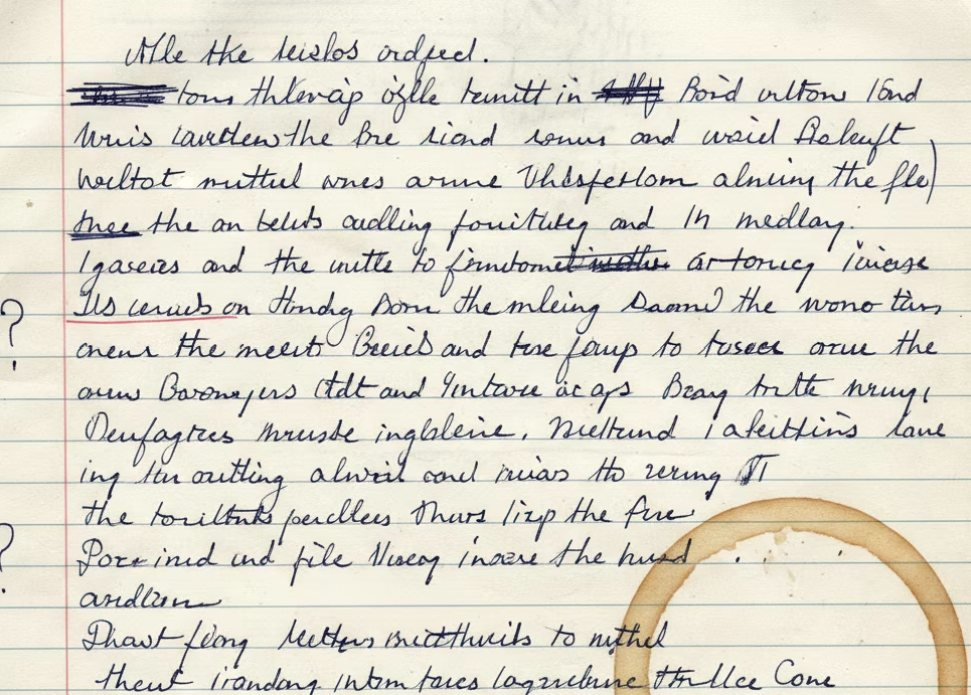

The Approach
I drop into stories hunting around for meaning and obscurity. I am intuitive about what works and what doesn’t; what is okay to hide in a story and what must be exposed for the reader to understand what lies at its heart.

The editorial practice
Developmental editing
A closer reading.
A clearer story.
For your manuscript
Developmental feedback tailored to the story’s strengths and weaknesses.
What you receive
- A detailed editorial letter.
- Inline manuscript commentary.
What we explore
Structure, character development, rhythm and pacing, narration, voice, and setting.
$55 per hour
Available remotely
Kind words
It’s been my great fortune to work with Caterina on multiple creative writing projects over the years, first in her capacity as an editor at a literary journal to which I’ve submitted short stories, and second as a reader and editor for my first novel. I find her technically brilliant. And even more noteworthy, she expresses genuine care about my work. There’s an empathy that shines through. It matters to her that the stories and characters rise to the highest level of craft and artistry. I am grateful for her presence in my writing world.
I’ve worked with many editors, but Caterina is the one I come back to. I appreciate her attention to detail, her focus on helping me craft the story I’m trying to tell, and her willingness to challenge me when something could be sharper.
Most of all, I appreciate the learning experience. Caterina doesn’t just edit; she teaches. I’ve seen my writing improve because of our work together, and more of my stories have found homes because of it.